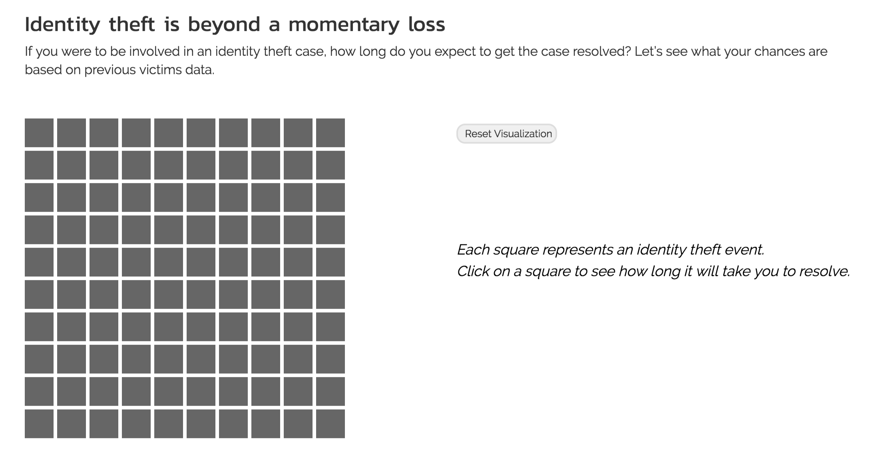
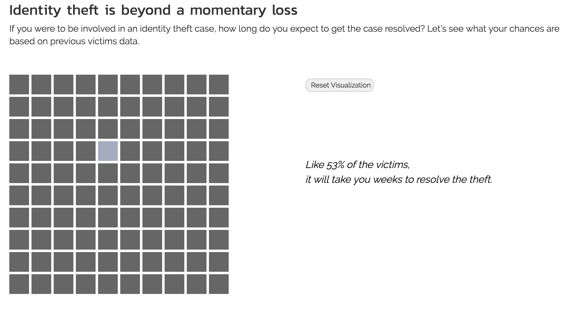
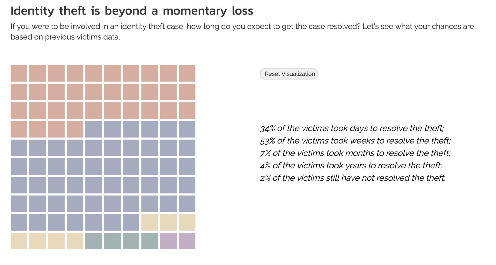
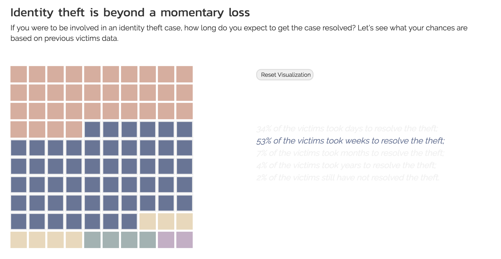

Process Book for Project Data at Large

Internet has become an integral part of modern life. As we take advantage of the conveniences that the digital age offers,
we are becoming increasingly vulnerable to cybercrimes such as fraud and identity theft. Inspired by the recent data breach
incident from Equinfax that affected over 143 million people in the United States and a
visualization of company data breach cases, we would like to investigate and understand
the increasingly serious issues with data breaches, use visualizations to raise the public’s awareness in monitoring the safety
of their personal data, and offer proactive approaches in cybersecurity protection.
The project is consisted of 4 main parts: We begin by describing the rise of the Internet age and transitioning to a
brief background of hackers and why they hack. Subsequently, we show selected incidents of company data breaches to make the
point that the data we implicitly entrusted to companies are susceptible to cyberattacks. The consequences of these data breaches
are often cybercrimes on an individual level, so we follow up by visualizing identity theft trends and the time needed to resolve
it. Lastly, we aim to make suggestions on creating a safer online existence.
The main goal of this project is to use visualizations to raise the public’s awareness in monitoring the safety
of their personal data, and offer approaches in cybersecurity protection. To do so, we would like to explore the
following questions:
All of our data sources are listed in the main website. Here, we re-present data sources as they relate to our project sections.
Here, we present the design evolution of each of our 10 visualizations. As you will see, many of the visualizations underwent drastic re-designs.
This is one of the visualizations for which we not only changed the design, but we completely changed the content. Originally, the designed story flow was to visualize various online activities and compare their potential for exposing the user to cybersecurity threats. The design sketches are shown below.
However, we felt that bar charts are not very visually exciting, and at the same time, we came across a hackers survey that we find interesting and informative. We thought giving some insight into why and how hackers came to be is a better transition to discussing cybersecurity issues since we wouldn't be nearly as worried about cybersecurity if there weren't any hackers.
While we liked

View 1
View 2
View 3
View 4
